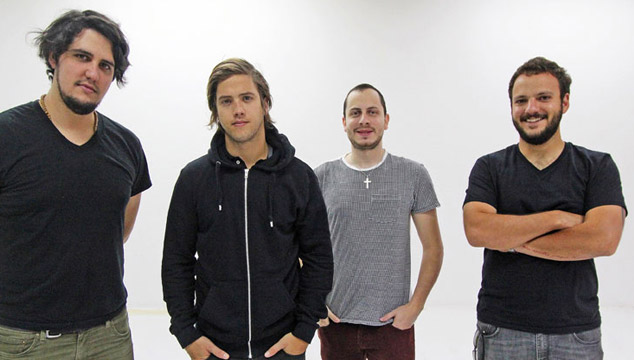
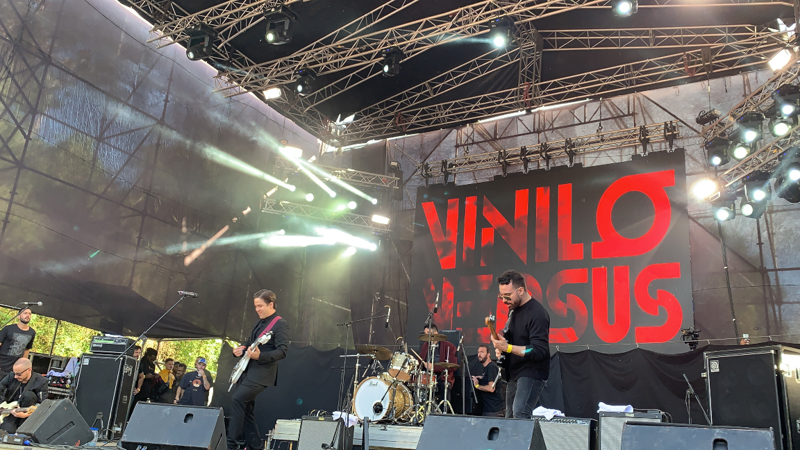

Es una banda de rock formada en 2004 en Caracas, Venezuela. Lo integran Rodrigo Gonsalves, Adrián Salas, Juan V. Belisario y Orlando Martínez. Es reconocido por la fuerte presencia de su sonido en vivo y en estudio, teniendo la particularidad de contar con dos bajistas en la formación.
Comenzaron como un trío de Power Pop que en ese momento se llamaba 'Vinilo', formado por Rodrigo Gonsalves (guitarra y voz), Adrián Salas (bajo y guitarra) y Orlando Martínez (batería). Después de un tiempo tuvieron la idea de hacer algo original en la banda, y se les ocurrió tener dos bajos, uno que siguiera los patrones de un bajista común y otro bajo con distorsión. Con esto ingresa en el 2005 Héctor Besson como bajista.

Integrantes de la banda
Fueron ganadores del popular Festival de Bandas Nuevas en 2006, recibiendo buenas críticas del público y medios especializados. Los siguientes meses vieron crecer su popularidad gracias a la constante agenda de presentaciones en salas y lugares de eventos que tenía la banda al mismo tiempo que preparaban el repertorio de lo que sería su primer disco.
Su segundo disco, "Si No Nos Mata", fue lanzado esta vez solo en formato digital. La edición física se lanzó en mayo de 2010. En marzo de 2010, actuaron junto con Famasloop en el anfiteatro de Sambil, como teloneros de Franz Ferdinand.

En concierto El segundo álbum fue nominado a los Premios Grammy Latinos en 2010 en la categoría de Mejor Álbum de Rock, perdiendo contra Fuerza Natural de Gustavo Cerati. En septiembre de 2011 realizaron una gira por Colombia, con ocho conciertos en Bogotá, entre el 13 y el 21 de ese mes, y finalizando la gira en Medellín, el 21 de septiembre.
En el 2012 gana una de sus dos nominaciones al Grammy Latino en la categoría de “Mejor Diseño de Empaque” por su disco “Cambié de Nombre”, convirtiéndose en la primera banda venezolana de este género en alzarse en este renglón.